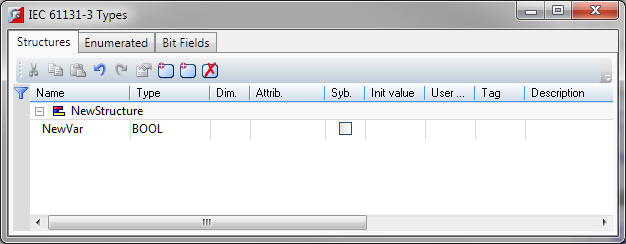
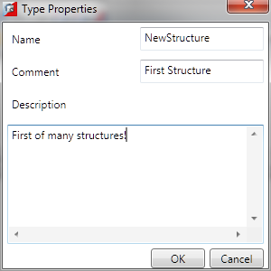
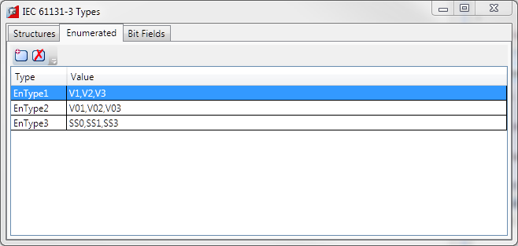
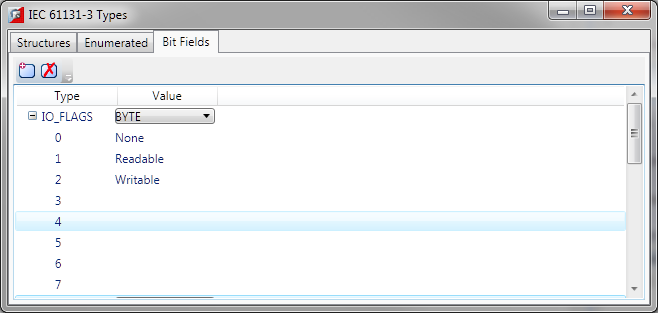

The types editor tool is an editor where the user can define, delete and modify custom types. It is a tab panel with three tabs for S tructur e types , E numerated types , and Bit F ields types .
The structures tab displays the custom structure types:

The description of the fields available for editing is the same as for the variables editor tool.
To add a new structure, press the “Insert new structure” button. To delete an existing structure, select it and press the “Delete” key on the keyboard, or press the “Remove” button.
Double-click on a selected structure displays the “Type properties” dialog, where a type name, comment and description can be edited.

To add a new field in an existing structure, press the “Insert” key on the keyboard, or press the “Insert new variable” button. To delete an existing field in a structure, select it and press the “Delete” key on the keyboard, or press the “Remove” button.
The enumerated tab displays the custom enumerated types:

This tab editor has two columns:
|
Column |
Description |
|
Name |
The name for the enumerated type |
|
Value |
A coma separated list of symbolic values which will be the enumerated type values available for use in programs |
To add a new enumerated type, press the “Add new IEC type” button. To remove an existing enumerated type, select it and press the “Remove” button.
To edit the name of an existing enumerated type, double-click on the selected type's Name column in the editor.
To edit the enumerated values, double-click on the selected type's Value column.
The bit-fields tab displays the custom bit-field types:

This tab editor has two columns:
|
Column |
Description |
|
Type |
The name for the bit-field type. Below the name, is the list with bits (number of bits depends on the base type). The list can be expanded/collapsed via the “+” button in front of the type name. |
|
Value |
A combo box with the available base types for the bit-field type. Depending on the base type, the bit-field can have different number of bits. For example, a bit-field, based on INT, has 16 bits. A bit-field, based on SINT, has 8 bits. Each bit can be specified a symbolic name for use in code. For example, user-friendly names can be assigned, like “Shared”, “None”, etc. |
To add a new bit-field type, press the “Add new IEC type” button. To remove an existing bit-field type, select it and press the “Remove” button.
To edit the name of an existing bit-field type, double-click on the selected type's Type column in the editor.
To change the base type of the selected bit-field type, use the combo box with available types.
To edit the bit-field names, double-click on the selected bit-field bit in the value column.